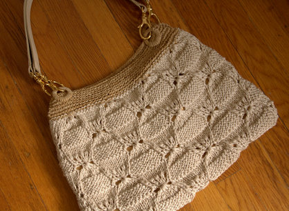

|
||
Premium Patterns Wintry Mix Mitts Love Bytes HawkeyeFree Patterns Kiddie Cadet Summerlin Ruffled Scarf Seamless DS Sock Simply Seamless Pouch Myriads of MushroomsExtras DIY Mitten Blocker Felt Patch Tutorial Yarn Dyeing Tutorial Needle Pouches Knitting Journal |
August 16, 2007 - Posted by Grace SchneblyLorraineUp until a few days ago, this purse was my most outstanding UFO. It had been hibernating for over a year; I literally cast on in July of 2006! I'm really glad that I finally finished it, and I can't believe it is done. Now I only wish I would have gotten around to finishing it sooner. Project Specs Knitting this bag was easy, and only took about a week to knit both the front panels. I really like the stitch pattern, even though it kind of looks like a knock off of a knock off Salvatore Ferragamo knitted shoulder bag. This was a great leisurely knitting project; each panel is worked back and fourth, and the stitch pattern is easy to get the hang of. I blocked each panel separately, pinning one onto a piece of cardboard and then spraying it with a spray bottle to get it wet. I wanted to make sure that I got each panel the same size and shape so traced around the first panel I blocked, and then once it was dry I pinned the second piece to exactly the same size. I used backstitch to seam to two panels together. A problem with this bag is that it is not very practical unless it is lined. The holes create perfect places for pens to slip through or keys to stick out. I chose a shiny gold fabric for the lining, which I think really compliments the bit of shine from the Cotton Twist. I had never sewn a lining where both the inside and the outside of it would show, and frankly that's why it took me so long to finish this bag. It really wasn't that hard once I sat down and did it. I forgot to take pictures of my lining process again, I always just get so caught up in it and want to get it finished that I never pause for pictures. I hand sewed it into the bag trying to make it as invisible as possible, and I'm really happy with how it turned out!! The only thing I wish I would have thought to do was add a zipper, because now the bag is just kind of open. I didn't attach a snap or anything, but maybe I will later. We'll see how it goes after some use. Berroco suggests to get these handles from MJ Trimming, but I didn't really think the dark color would go with my bag. I dragged Si down to Filene's Basement to search for a bag I could take the handles off of, and found an Amanda Smith bag for like $10 that goes really well. The handles have clips which made them really easy to attach, and they're gold which goes with the lining fabric. The handle color also matches the bag really well, so I got lucky! The rings which the handles clip onto are also recycled from the bag, but I covered them in Berroco Suede to make them match. I still haven't got a chance to wear this bag out yet. It is a little fancier than most bags I have which will be nice for both casual wear and if for some reason I have to dress up (which never happens). I can already tell that the Cotton Twist will probably pill and might snag easily. It was kind of splitty while working with, and it would get snagged on just the slightest roughness of my Denise needles. I had to get some fine grit sandpaper to smooth them out so ever single stitch wouldn't get caught. However I am really happy with how the yarn really shows the pattern and how it blocked really well. Anyways, maybe I will wear it out this weekend!  |
   Recent ReviewsRecent Posts
 Our Favorites
|
| © 2007 KathrynIvy.com | ||
{kind=link}
{kind=link}
{kind=link}